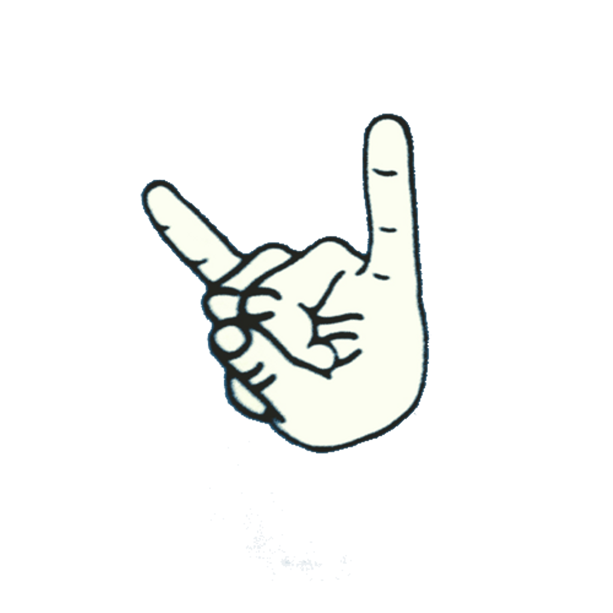
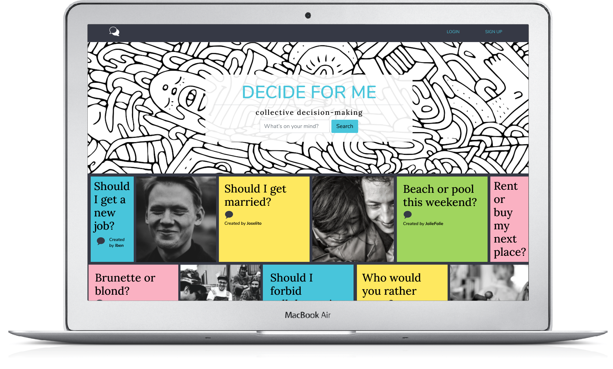

Welcome
I'm Mariana, UX/UI Designer
I can help you
- Shape a delightful journey for your users
- Perform within business KPIs and product goals
- Qualitative and quantitative user research
- Conduct experiments and user testing with data-driven metrics
- Design user flows based on behaviours, decision trees, usability and cognitive biases
- Create interactive prototypes, wireframes and a UI Design System
- Build responsive websites
- Conduct usability testing with data-driven metrics
I am a
critical
independent
imaginative
thinker
I love communities
I have worked with people around the world
Head of Communications
in Coyoacán borough
Mentor for young people
in Oxfordshire county
Project Manager
in Matagalpa department
Tour Guide
in Oxford
Robot Nanny
in London
Mural Painter & Scientific Illustrator
in Mexico City
I have built
BCR is an app to create and share bicycle routes to encourage people to cycle more in their localities.
UX/UI Designer | 2021
Aimed at Mexico City residents who suffer from severe air pollution and traffic congestion problems. The complete UX process was developed from research to a high-fidelity interactive prototype.
Challenge to Solution
Key insights from research allowed the ideation of features based on a bike-logic search criteria instead of the car logic that dominates the roads.
Case studyGreen future here we come!
Feeling indecisive?

Decide for me allows you to share your dilemmas with other users to help you come up with a better decision.
Lead Designer & Developer | 2020
Collaborated in a team of four to build this Ruby on Rails web application. My role as a Lead Designer involved developing the product concept and the style guide, whilst I also implemented features as a developer.
Challenge to Solution
This dilemma social media was ideated to target the undecisive millenial with features like posting, voting, and commenting to provide opinions and reflections in a quick, fun, and unbiased way.
Case studyHelp administrating!
Keepo keeps neighbours up to date with their condo payments.
UX/UI Designer & Developer | 2021
UI redesign proposal based on a UX Heuristic Evaluation including Consistency and Standars, Flexibility and Efficiency of Use, Visibility of System Status & Help and documentation.
Challenge to Solution
How can we improve usability for new and returning users? was the question leading the redesign proposal. Less screens, accessibility considerations and a new concise visual code for the payment status of services were some of the improvements.
Case study